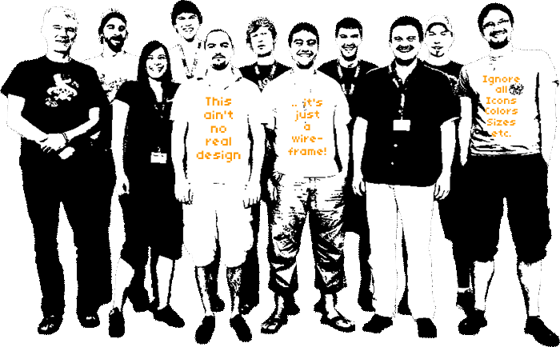

Task #8633
Add a hint that the UI is only wireframes
| Status: | Resolved | Start date: | 2010-07-03 | ||
|---|---|---|---|---|---|
| Priority: | Should have | Due date: | 2010-07-08 | ||
| Assigned To: | Berit Hlubek | % Done: | 30% |
||
| Category: | - | ||||
| Target version: | - |
Description
The login screen should display a (nicely designed) hint that all you see is just wireframes and that colors, sizes, icons etc. should be just ignored.
{kind=link}
{kind=link}
{kind=link}
History
#1 Updated by Sebastian Kurfuerst about 5 years ago
- Assigned To set to Jens Hoffmann
#2 Updated by Sebastian Kurfuerst about 5 years ago
- Due date set to 2010-07-08
#3 Updated by Jens Hoffmann about 5 years ago
- File t35-team3.png added
#4 Updated by Robert Lemke about 5 years ago
- Status changed from New to Accepted
#5 Updated by Robert Lemke about 5 years ago
- % Done changed from 0 to 30
#6 Updated by Robert Lemke about 5 years ago
@Jens: How about making this picture not 1c but rather pencil-scribbled like.
I don't know where exactly you'll position that photo on the login screen but maybe there's some space left for putting the text into speech bubbles. Something like "... and beware: this ain't no real design, it's a wireframe!" and another one "these are not the final colors, positions and icons"
#7 Updated by Jens Hoffmann about 5 years ago
- File T35-1-Content-Latest.pdf added
- File t35-team-700px-8bit.png added
This is how I would suggest to place in the IMG on this Screen. :)
Little Layout details/notes:- Login Box placed "fixed" from the top
- Team GFX placed "fixed" from the bottom (use the new one with 700px width, please)
- Footer Text got a width of 800px and is placed in the center, but the text is left aligned.
- Login Box should get a opacity of 80% so the GFX should be visible through if the screen is to small
#8 Updated by Jens Hoffmann about 5 years ago
- Category set to User Interface
- Assigned To changed from Jens Hoffmann to Berit Hlubek
#9 Updated by Berit Hlubek about 5 years ago
Added the picture and committed. Waiting for another version of the picture.
#10 Updated by Jens Hoffmann about 5 years ago
- File t35-team-700px-8bit.png added
Changed the text as Robert suggested.
#11 Updated by Jens Hoffmann about 5 years ago

#12 Updated by Berit Hlubek about 5 years ago
committed the new picture
#13 Updated by Berit Hlubek about 5 years ago
- Status changed from Accepted to Resolved
#14 Updated by Robert Lemke about 4 years ago
- Project changed from Core Team to Base Distribution
- Category deleted (
User Interface) - Target version deleted (
550)
#15 Updated by Robert Lemke almost 3 years ago
- Project changed from Base Distribution to TYPO3.Neos